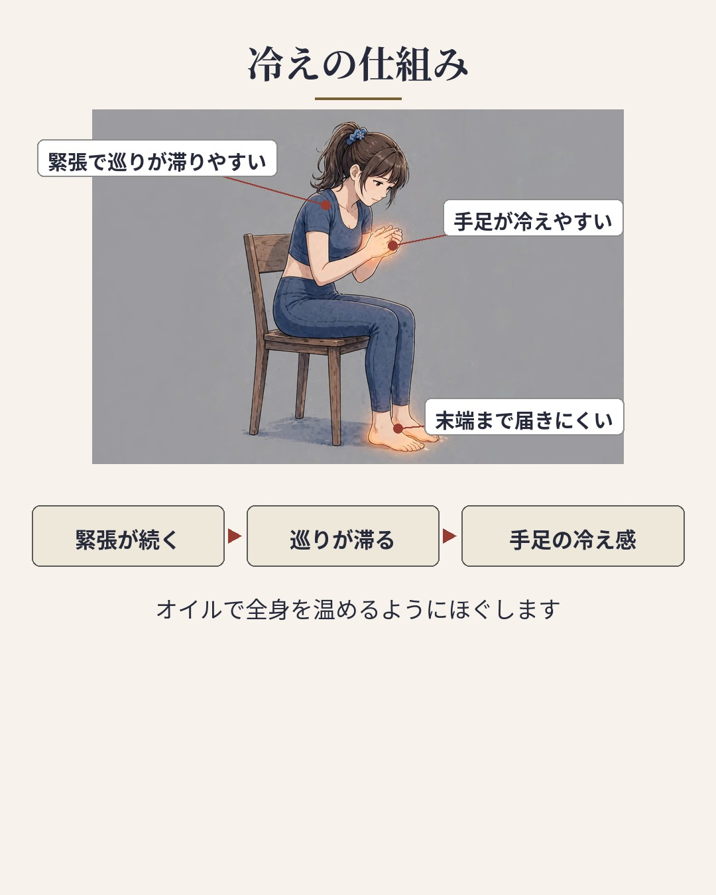

三ノ宮で年末の忙しさに気になる冷え感｜温め方と日常の見直し、受診の目安セルフケア

年末が近づき、仕事の区切りや行事、買い物、大掃除の準備などで忙しい日が続く時期に、手足の冷たさや体の冷えが気になる方へ。年末の忙しさと重なって目立ちやすい冷え感について、一般的な解説と考えられる要因、温め方と日常の見直し、受診の目安を整理しました。
冷え感とは — 年末の忙しい時期に気になりやすい手足の冷たさ
冷え感は、手足の先や体全体が冷たく感じる感覚を指す、日常的によく使われる言葉です。感じ方には、手先や足先が冷たく感じる、体全体が冷えたように感じる、お腹まわりが冷たく感じる、温かい室内に入っても冷たさがしばらく残る、といった表れ方があり、程度には個人差があります。年末が近づく時期には、「買い物で外を歩き回った日は、帰宅しても足先の冷たさが残る」「予定が詰まった日が続くと、夜になっても手足が冷えたままに感じる」「暖房の入った室内と寒い外の移動を繰り返す日は、体の冷えが気になる」「湯船に入る時間が取れない日が続くと、冷え感が抜けにくい気がする」といった声を聞くことがあります。冷えそのものは季節を問わず語られるテーマですが、年末の時期は、外の寒さに加えて、忙しさによる過ごし方の変化が重なりやすい点が特徴とされます。冷え対策の基本そのものに絞った記事冷え対策の基本3つ｜三首を温める・湯船につかる・飲み物を見直す、同じ年末の忙しさの場面で頭の重さに絞った記事三ノ宮で年末の忙しさに気になる頭の重さ｜予定が続く時期の過ごし方とセルフケア、受診の目安も公開しています。この記事では場面を年末の忙しさに、テーマを冷え感に絞って眺めます。ここでは原因を一つに決めつけず、考えられる要因と、この時期の温め方や日常の見直しを整理します。
冷えを感じやすい場所の目安は、図1のとおりです。
図1｜冷えを感じやすい手首・お腹・足首（正面）

考えられる要因

要因は一つとは限りません。まず気温の面では、年末は外の寒さが増す時期で、買い物や移動、年末の行事などで冷たい外気に触れる時間が長くなりやすく、手足の先から冷えを感じやすいとされます。暖房の入った室内と外との行き来が重なると、温度差の繰り返しも重なって感じられる場合があるようです。過ごし方の面では、仕事の区切りや準備で座りっぱなしや立ちっぱなしが続いたり、体を動かす時間が減ったりすることも、冷え感と重なって感じられることがあります。入浴の面では、忙しさからシャワーで済ませる日が続くと、湯船で体を温める時間が短くなりがちなことも挙げられます。食事の面では、会食や外食の機会が増えて食事の時間や内容が不規則になったり、冷たい飲み物をとる場面が増えたりすることも関わる場合があるとされます。睡眠の面では、準備や考えごとで眠りが浅くなっていたり、前日までの疲れが残っていたりすると、同じ寒さでも冷えが目立ちやすく感じられる場合があるようです。そのほか、忙しい時期は緊張した状態が続きやすく、緊張と休息の切り替えのバランスの変化として語られることもあります。東洋医学では、冷えは気・血の巡りのバランスの変化として捉えられてきました。冷えそのものの考え方は冷えのお悩み別ケアページにもまとめています。どの場面で冷えを強く感じたかを簡単にメモしておくと、ご自身のパターンを眺める参考になります。
年末の忙しい時期に取り入れられる温め方と日常の見直し
まずは、忙しい時期でも取り入れやすい小さな工夫から始めてみてください。服装の面では、首・手首・足首の「三首」を冷やさないよう、ストールや手袋、厚手の靴下やレッグウォーマーを場面に合わせて使うこと、室内外の温度差に合わせて脱ぎ着しやすい重ね着を選ぶこと、お腹まわりを冷やさない服装を意識することが、日常で取り入れやすい工夫です。飲み物や食事の面では、温かい飲み物を選ぶ場面を増やす、忙しくても食事を抜きすぎない、といった見直しも考えられます。入浴の面では、シャワーで済ませず湯船につかる時間を作ることが、この時期に意識したい過ごし方です。どうしても時間が取れない日は、足湯だけでも取り入れる方法があります。動きの面では、買い物や移動の合間に少し歩く、座りっぱなしが続く日は席を立って足首を回したりふくらはぎを動かしたりする、といった小さな動きを挟むと、同じ姿勢が続いた体を動かすきっかけになります。予定の面では、年末の用事を詰め込みすぎず、休む時間も予定の一つとして残しておくことが、無理のない過ごし方とされます。夜は照明を少し落として早めに休む準備をし、寝る前のスマートフォン時間を短くすることも、翌日に向けた工夫とされます。体を温めるケアは、熱すぎる温度で長く当て続けたりせず、気持ちよい範囲にとどめることが続けるうえでの目安になります。無理のない範囲で、一つか二つ選ぶところから始めてみてください。
温めのケアで意識したい場所の目安は、図2のとおりです。
図2｜冷えに関わるツボの位置（正面）
受診の目安
片側の手足だけが冷える、皮膚の色の変化がある、手足のしびれや痛みを伴う、発熱がある、体重が短い期間で大きく変わった、動悸や息苦しさがある、むくみが強い、冷え感が数週間以上続く、または少しずつ強くなっている、日常生活や仕事に支障が出ている——こうした場合は、自己判断で様子を見続けず、内科などの医療機関への相談をご検討ください。冷え感は、体のほかの変化の表れとして感じられる場合もあるとされるため、原因を一つに決めつけずに相談することが目安になります。当店の施術はリラクゼーションを目的としたもので、症状の診断・治療を行うものではありません。気になる症状があるときは、まず医療機関で相談したうえで、日常のケアの一つとしてサロンのご利用をお考えください。
三ノ宮で、年末の忙しい時期に体を温めて休める時間を
ステラスピカは神戸・三ノ宮エリアの女性専用サロンです。営業時間は月〜土17:00〜22:00（日曜休み・完全予約制）で、夕方から夜の時間帯にご利用いただけます。年末の忙しさが続く時期も、その日の疲れをため込みすぎない過ごし方の一つとして、夕方の時間を体を休める時間にあてる方がいらっしゃいます。完全個室でご案内します。オイルマッサージ／美容整体は90分10,000円（税込）で、施術歴30年のセラピストが、その日の体調や気になるお悩みをうかがいながら、その日の状態に合わせて無理のない圧と内容で全身をケアする施術を組み立てます。施術では、全身を温めるようにほぐし、特にお腹・腰・脚の巡りを意識しながら丁寧にケアしていきます。なお、ステラスピカはご予約はLINE公式アカウントから受け付けています。料金やメニューの詳細はメニュー・料金、ご予約の流れはご予約・お問い合わせをご覧ください。
ステラスピカ（三ノ宮） — 女性専用、90分 10,000円、月〜土17:00〜22:00、完全予約制です。